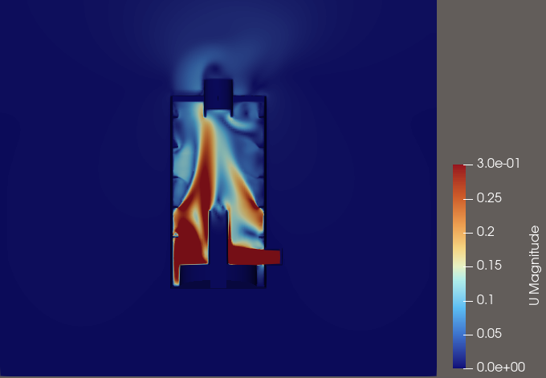
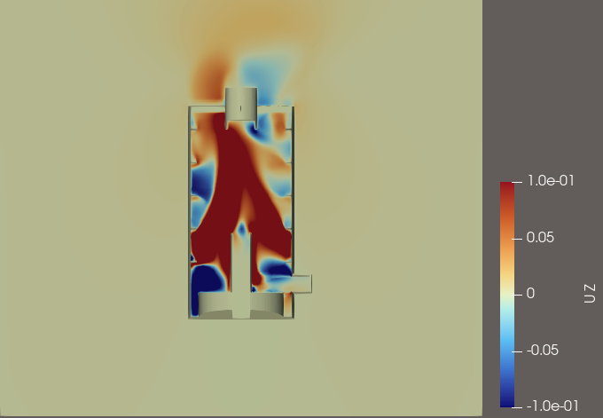

Telescopio · fluidodinamica
Ventilazione ad aria filtrata per un telescopio da 700 mm
Un sistema che soffia aria filtrata dentro il tubo chiuso di un telescopio Ritchey-Chrétien da 700 mm. Protegge lo specchio primario dalla polvere senza chiudere lo strumento e porta in fretta l'ottica alla temperatura dell'aria prima delle osservazioni.
DimensionamentoSedimentazione (legge di Stokes), correnti d'aria in cupola, scambio termico all'apertura
VentolaScelta sulla curva portata-pressione, con le perdite di filtro e condotti
VerificaCFD in FreeCAD + OpenFOAM, prove al fumo
ComandoDal PC dell'osservatorio, anche senza internet
- Ho dimensionato portata e velocità di uscita partendo dalla sedimentazione delle particelle (legge di Stokes), dalle correnti d'aria in cupola e dallo scambio termico all'apertura.
- Ho scelto la ventola sulla curva portata-pressione, tenendo conto delle perdite di filtro e condotti.
- Ho impostato la verifica del flusso con una simulazione CFD in FreeCAD e OpenFOAM, da confermare con prove al fumo.
- Raccordi stampati in 3D per un'installazione reversibile; la ventola si comanda dal PC dell'osservatorio anche senza internet.


Simulazioni OpenFOAM. Assumono che l'aria venga spinta da uno sportellino laterale.